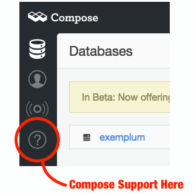
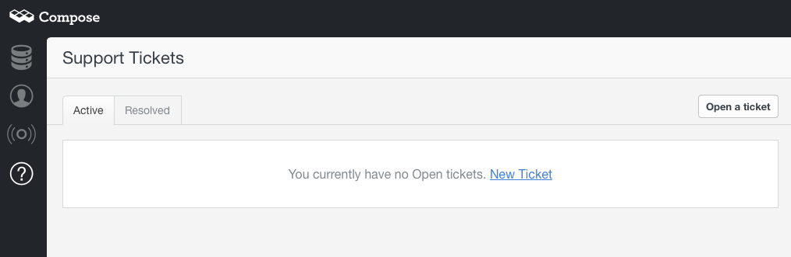
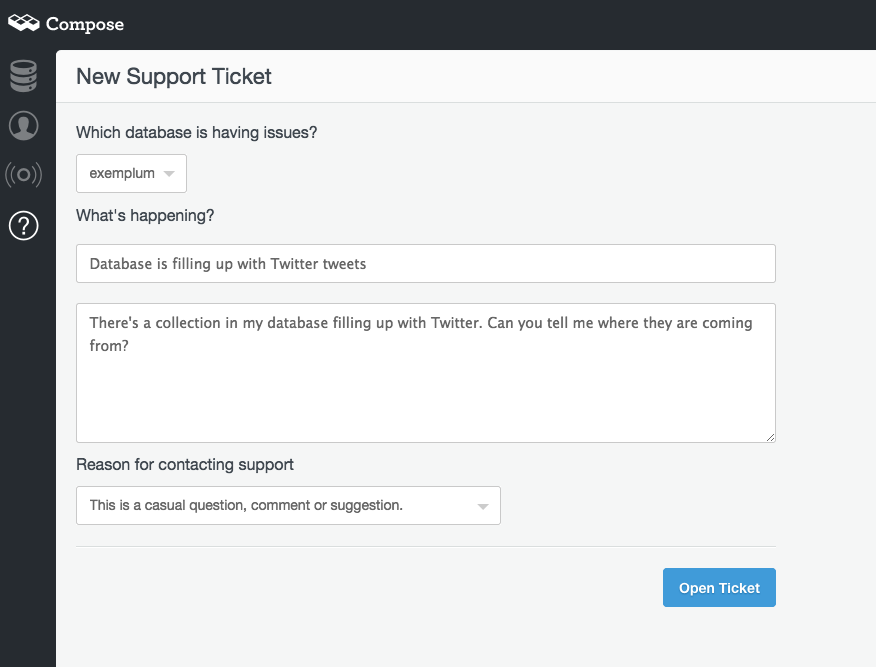
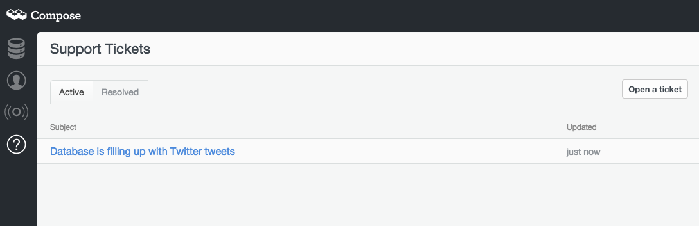
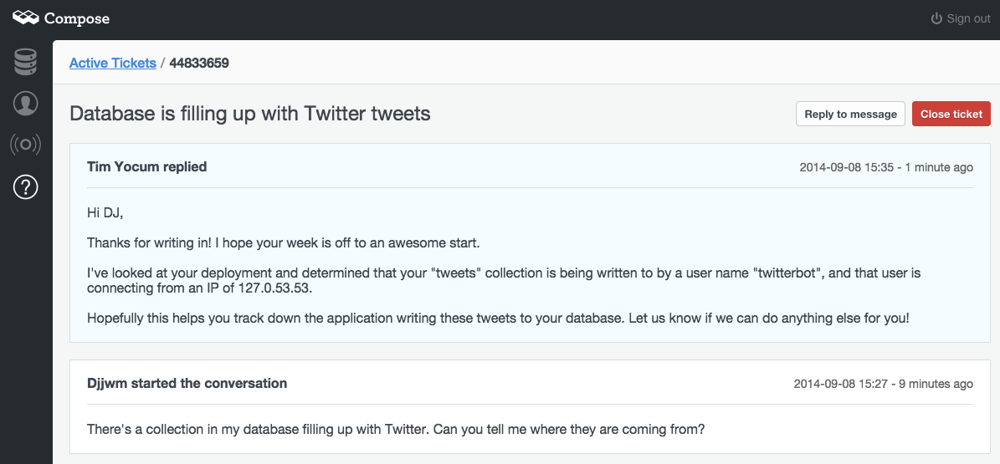
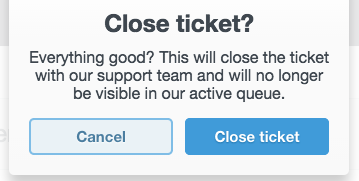

At your fingertips: Support
With the latest addition to the Compose dashboard, we’re bringing Compose’s support to your browser so you can get closer to the support process. Now you can hit the support button and rather than just being able to submit a support request, you can view your open and resolved support requests, read responses, reply to them or just provide new information for the ticket. We aren’t removing email as a support channel, but making it easier for you to manage your support requests without leaving the Compose application.
Regular users may recall that Compose has a support button up in the top right hand corner of the web application. Well, thats gone, because we are building support into the fabric of the Compose platform and for that it gets a sidebar menu item. It’s the circle with the question mark. Click on it to get to the new online support system.
There you’ll meet the active/resolved ticket view.
Making a new support request is as simple as clicking on New Ticket which takes you to the submit form. We’ll fill it in with a new issue:
Once you submit the ticket, it goes straight into the support team for immediate triage. You will find your open requests page now showing the state of that request too.
Clicking on an issue lets you browse its current status and messages exchanged over it.
Replies to you will still come over mail but you’ll be able to view them in context here. You can still reply by mail or reply from this view.
Once we’ve taken care of your request, you can close the support request. Don’t worry, it is still viewable in the Resolved requests tab and can be reactivated simply by entering a new reply on the thread. We’re not done till you are completely happy and with your new ability to view the progress of your support tickets you’ll be able to keep tabs on how we’re doing. If you have any questions about the support dashboard, drop a mail to support@compose.io or raise a ticket from your dashboard.
We’re still looking at how to bring this functionality to our users who use us via partners such as Heroku. For those users, mail to support is still the recommended route to assistance.